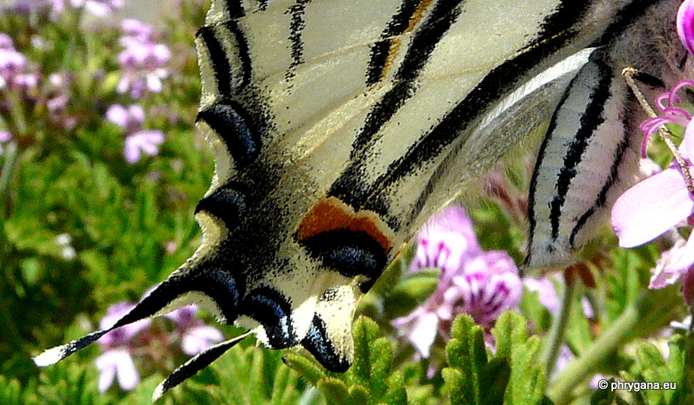

| PHRYGANA | Fauna | Flora | Galles | liste des espèces |
contact -
info - commentaires phrygana1 (at) gmail.com |
| Particularités crétoises | nouveautés | Mines | ressources naturelles |
| Iphiclides podalirius podalirius (Linnaeus 1758) |
| 352 | Fauna | PAPILIONIDAE | Papilioninae | Iphiclides Hubner 1819 |
|  Iphiclides podalirius Melambes (Agios Giorgos) 01 mai 2012 |
| (fr) le Flambé (nl) Koningspage (de) Segelfalter (en) Scarce Swallowtail (es) Chupaleche (it) il Podilario | |
| Envergure entre 65 à 80 mm; couleur de fond blanche à blanc crème; nombreuses rayures noires (6) donnant un dessin tigré; ailes postérieures avec une bordure noire et des lunules marginale, ainsi qu'un ocelle anal bleu entouré de noir et surmonté d'un trait courbe orange, prolongées par une longue 'queue'; antennes noires | |
| Oeufs pondus isolément sur les feuilles. Incubation de 1 à 3 semaines. Les chenilles se développent sur 7 à 9 semaines. Chrysalide généralement sur la plante-hôte | |
| Larve de couleur noire après l'éclosion, devenant verte; larve oligophage: Rosaceae (surtout Prunus sp.) | |
| Espèce plurivoltine: 2 à 3 générations annuelles. | |
| Périodes de vol en: février mars avril mai juin juillet août septembre octobre novembre | |
| Statut en Crète: indigène | |
| Biotopes en Crète: phrygana, bords des chemins, talus, jardins, parcs, champs abandonnés. | |
| Altitudes: 0 - 1300 m. | |
| Distribution: Europe, Asie tempérée, Sibérie, Japon | |
|
Iphiclides podalirius Melambes (Agios Giorgos) 01 mai 2012 |
|
Iphiclides podalirius Melambes (Agios Giorgos) 01 mai 2012 |
|
Iphiclides podalirius Melambes (Agios Giorgos) 01 mai 2012 |
|
Iphiclides podalirius Melambes (Agios Giorgos) 01 mai 2012 |
|
Iphiclides podalirius Melambes (Agios Giorgos) 23 mai 2013 |
| 05 juillet 2013 |
| © paul fontaine -- © Phrygana.eu 2007 -- 2013 |